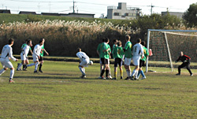
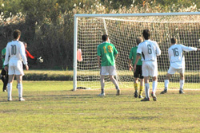

|
Misato Sun 20th November. Billed as a relegation scrap between two sides who had started the season in less than impressive fashion, Sala's preparations were thrown into disarray by the apparent disappearance of their centre back Clarkey. After it was determined that the lanky Scotsman had last been seen having an indepth conversation with the bottom of his "daijoki", arrangements were made for a makeshift defense. The able Yusuke stepped into the centre back role and proceeded to fill the big man's shoes with distinction.
|  |
|
Sala's Brookey uses his family jewels to block Toby's free-kick and give himself a break on the sideline!
|
No one knew quite what to expect from a Shogun Knights line up featuring more new faces than American Idol. In fact their right midfielder, sporting a pair of white sneakers with grey business socks, was booked early on for a fashion violation.
Sala began the match well, gaining the ascendancy in midfield through the hard work of Brookey and Lenny on the wings and Toby in the middle. Toby shot over the bar after some clever work by Brookey and Bedingfield but big Stu Anderson, playing in an unfamiliar sweeping role for the Knights, was doing a good job of thwarting Sala's attacks.
Midway through the half Brookey was forced to leave the field in great discomfort after his glancing "header" failed to find the target. He spent the rest of the half on the bench, bemoaning the pinpoint accuracy of Toby's free kick.
Sala's possesion eventually told as big Doug Lee's speculative cross from the right somehow eluded the Knights keeper, ricocheting off Bedingfield's nipple and into the back of the net to cap a tittilating first half from the Aussie.
Steve Hubert made it 2-0 soon after, capitalizing on a Lenny Tui mystery cross that somehow weaved it's way through a crowd of Knights defenders to find a confused Canadian waiting on the goal line. Just reward for a player who has been in stellar form of late.
After the break the match degenerated into the kind of scrappy affair befitting two clubs wallowing in the murky depths of the relegation zone. Neither side could hold the ball for long but Sala substitute Shigehisa had a chance to score his first goal for the club, his shot being easily saved by the keeper.
|  |
|
Steve Huberty knocks in the loose ball for Sala's 2nd goal.
|
Some good bullocking work by Brian Gallagher allowed Toby to wriggle free and direct a bobbling shot through the hands of the keeper for Sala's third. However, Sala captain Guido was unhappy with the way his side were playing and decided to go for a numerical advantage subbing Shigehisa for the duo of Giles and Bedingfield. The ploy failed to work and the only further substitution was that of the referee's brain in the 70th minute. Toby was awarded a hypothetical free kick on the edge of the box for a supposed foul that actually occured closer to the penalty spot. And minutes later the unfortunate Knights right back was booked for being at the scene of the crime under FIFA's new law "conspiracy to commit a foul".
But the only thing that resulted for Sala was a string of missed chances. Steve Hubert's declared himself a "s**thead" after two chances went begging. Will he ever have a better chance to score a hatrick in the TML? Towards the end of the match it was the Knights who looked more like scoring on the break and big Sid had to perform admirably to keep his third clean sheet in succesion.
Sala left Misato happy with the three points but improvement will be necessary as they face the in form Jets and the Hibs early next month. The Knights will look to next weeks match against France as an opportunity to pick up their first points of the season.
Proxy reporter, Dhugal Bedingfield
|